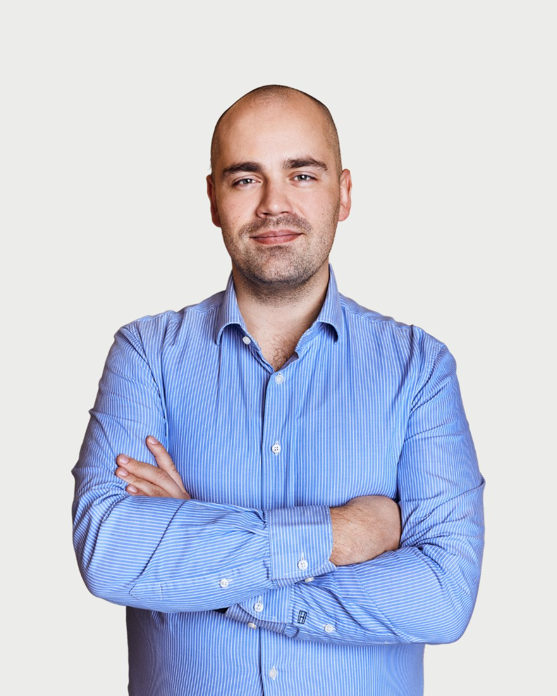

Regiszter 24 · Klinikai szakpszichológus
Mikus Róbert
Mindaddig, amíg a tudattalan tudatossá nem válik, a tudatalatti fogja irányítani az életed, és te sorsnak fogod hívni", C. G. Jung
Amiben segítek
Mikus Róbert saját megfogalmazásában. Ha a listában nem találja a saját helyzetét, az első beszélgetésen ezt is megbeszélik.
- Önismeret -Ki vagyok én? Mit szeretnék elérni az életben?
- Célok kitűzése és elérése
- Önértékelési problémák
- Munka és magánélet egyensúlya
- Motiváció Félelmek leküzdése
- Hangulat javítása
- Stressz csökkentés
- Negatív gondolatok, érzések és viselkedés megváltoztatása
- Krízis és változásmenedzsment
- Gyász és veszteségek feldolgozása
- Teljesítmény növelés
- Hatékony kommunikáció
Bemutatkozás
Mikus Róbert saját szavaival. Egy alkalom díja 18-25 ezer forint. A díjakról
Amennyiben úgy érzi, hogy az életében eljött a változás ideje, örömmel segítek a következő lépések megtételében.
Mikus Róbertnek hívnak, pszichológus, coach és integratív pszichoterapeuta jelölt vagyok. 2015 óta dolgozom különböző korosztályokkal és kultúrákból érkező emberekkel, segítve őket abban, hogy megtalálják saját megoldásaikat és előre lépjenek az életük kihívásaiban. Mindezek mellett a klinikai és egészség pszichológia területén is szereztem tapasztalatot, dolgoztam nappali kórházban és pszichoterápiás osztályon, ahol mélyebb betekintést nyerhettem a mentális egészség működésébe.
A magánpraxisom Budapesten található, de hála a modern technológiának, online is elérhető vagyok a világ számos pontjáról. Munkámban az önismeret és a folyamatos fejlődés kap központi szerepet. Hiszem, hogy mindenki rendelkezik azokkal az erőforrásokkal, amelyek szükségesek a saját problémái megoldásához. Ahogy Milton H. Erickson fogalmazott: "Mindenkiben ott van a megoldás a saját problémáira, csak fel kell ismerni."
Az önismereti utazásom tíz évvel ezelőtt kezdődött, és azóta meghatározó élménye az életemnek. Saját tapasztalataimból tudom, hogy az önismeretbe fektetett idő és energia megtérül, és jelentős pozitív változásokat hoz az életben. Ezért is tartom fontosnak, hogy a klienseimet támogassam abban, hogy ők is megtapasztalhassák ezt a fejlődést.
Szakmai háttér
Az elmúlt évek során különböző módszereket sajátítottam el (KIP, NLP, Ericksoni hipnózis), hogy a lehető leghatékonyabb segítséget tudjam nyújtani. Az általam alkalmazott megoldás-orientált és rendszerszemléletben a probléma elemzése mellett az "itt és most"-ra, az erőforrásokra és a célokra helyezem a hangsúlyt. Hiszem, hogy az Ön jövője a tét és a változás megvalósítható, ha megteszi az első lépést.
Képzés és szakmai út
66 tétel. A képzések és a szupervízió az akkreditált szakképzőhely rendjében folynak. Mit jelent ez Önnek
Iskolai végzettség
Módszerspecifikus képzések
Egyéb képzések
Egyéb képzések
Tanítómesterek
- Dr. Daubner Bélapszichiáter, kiképző pszichoterapeuta, szupervízor
- Dr. Fadgyas Ildikópszichiáter, addiktológus, kiképző pszichoterapeuta, szupervízor
- Dr. Barát Katalinpszichiáter, kiképző pár- és családterapeuta, szupervízor
- Harkácsi Juditklinikai szakpszichológus, pszichoterapeuta, szupervízor
- Molnár Istvánpszichológus, coach, NLP tréner
- Carl G. Jung
- Milton H.Erickson
- FeldmárAndrás
Rólam mondták
Kliensek visszajelzései, a hozzájárulásukkal, névtelenül.
Akkor fordultam Róberthez, amikor olyan mélyponton voltam az életemben, hogy némi egyértelműségre és útmutatásra volt szükségem. Ő pedig nagyon készséges és megértő volt. Meghallgatott, és úgy éreztem, azonnal megértette, mit keresek.
Egy érzelmi hullámvasúton találtam magam, ahol a hirtelen lelkesedés elsöprő szomorúsággá változott. Elvesztettem azt a képességemet, hogy visszatartsam a könnyeimet a nyilvánosság előtt, valamint a munkahelyen. A munkám elvesztette az értelmét, én pedig megvetően tekintettem rá. Annak ellenére, hogy rengeteg önsegítő irodalmat olvastam, egyedül nem találtam megoldást. Nem tudtam elfogadni, hogy az érzéseim és a szenvedéseim hitelesek és elfogadhatóak. Róbert segített abban, hogy jobban odafigyeljek önmagamra, és megtanuljak együttműködni magammal.
Körülbelül 2 évvel ezelőtt vettem fel a kapcsolatot Róberttel, amikor a személyes életemben bekövetkezett néhány változás miatt szükségem volt egy coachra. Nagyon hasznosnak találtam, hogy online is kapcsolatba léphettem vele, ami kényelmessé tette számomra az egész folyamatot. Szakmai és éleslátó szemlélete pedig hatékonnyá és értékessé tette az üléseket.
Lehetőségem adódott 2020 tavaszán néhány hétig dolgozni Róberttel. A konzultációk során arra összpontosítottunk, hogy az önbizalmamon dolgozzunk. Találkozásaink hasznosnak bizonyultak abban, hogy felismerjem saját értékeimet, és sokat segítettek abban, hogy jobban megértsem, melyek azok a célok, amelyeket valóban el akarok érni az életben. Érdekes technikákat is tanultam tőle az érzelmi állapotaim kezelésére, valamint arra, hogy hogyan változtassam meg a korlátozó hiedelmeimet. Róbert mindig nagyon türelmes és professzionális volt, és olyan bizalmi légkört teremtett, amely sokat segített abban, hogy nyugodtnak érezzem magam a folyamat során.
Regiszter 24
Időpont Mikus Róbertnél
Az ügyfélszolgálat hétköznap 9 és 15 óra között egyeztet. Ha bizonytalan, hogy Ön kihez tartozik, azt is megbeszélik, és ha kell, más kollégát javasolnak.